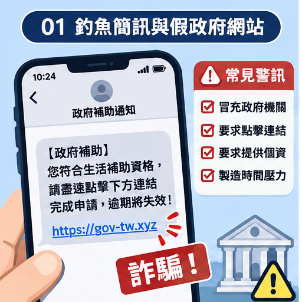
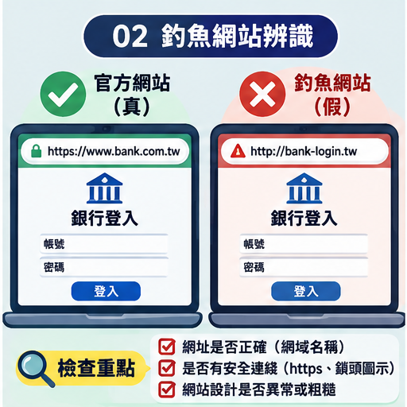
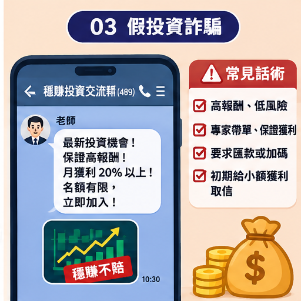

UNIT 01 ・ 入院快篩
偵探入院測驗
破除直覺自信，認識視覺欺騙、有限注意力與跨研究年齡差異。
Learn to Spot Scams Before They Spot You
你以為自己一眼就能識破假網站與詐騙訊息嗎？本學院整合五篇國際經典資安與心理學研究，以及內政部警政署 165、數位發展部與金管會官方防詐指引，帶你透過四個偵探任務拆解詐騙者的心理陷阱與偽裝破綻。

釣魚簡訊 Smishing
假網站視覺欺騙
假投資群組陷阱破除直覺自信，認識視覺欺騙、有限注意力與跨研究年齡差異。
點擊剖析五大說服原則，走進愛情詐騙時間軸與台灣假交友投資手法。
拿起偵探放大鏡檢驗虛構銀行頁，學會網域判讀、HTTPS 邊界與官方查證。
8 題台灣生活情境挑戰，透過「可教時刻」即時解析取得防詐偵探稱號。
wiki/syntheses/teaching-evidence-map.md 中標記為 verification_status: verified 之頁面，不包含任何未驗證（pending）推論；圖片素材僅作教學視覺輔助，非研究證據。